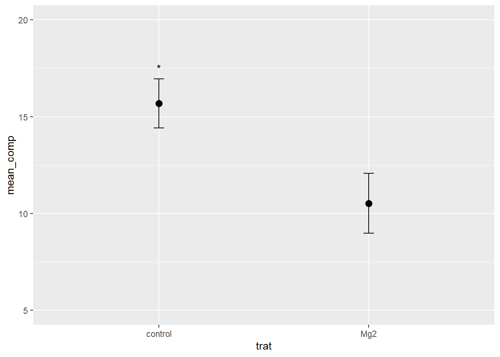

comp <- c(9, 125, 10, 8, 132, 11, 108, 95, 108, 104, 1372, 1591, 157, 142, 159, 1654, 18, 144, 1641, 16)Aula 4 - criação de dataframe e configuração dos dados
Conjunto de dados
Pacotes
library(tidyverse)
library(tibble)
library(data.table)
library(pak)Colando através do comando “Data pasta” (um data frame) um conjunto de dados de uma tabela.
dat <- data.frame(stringsAsFactors = FALSE,
trat = c("Mg2","Mg2",
"Mg2","Mg2","Mg2","Mg2","Mg2","Mg2","Mg2",
"Mg2","control","control","control","control",
"control","control","control","control",
"control","control"),
rep = c(1L,2L,3L,4L,
5L,6L,7L,8L,9L,10L,1L,2L,3L,4L,5L,6L,
7L,8L,9L,10L),
comp = c(9,125,10,8,
132,11,108,95,108,104,1372,1591,157,142,
159,1654,18,144,1641,16))dat2 <- tibble::tribble(
~trat, ~rep, ~comp,
"Mg2", 1L, 9,
"Mg2", 2L, 125,
"Mg2", 3L, 10,
"Mg2", 4L, 8,
"Mg2", 5L, 132,
"Mg2", 6L, 11,
"Mg2", 7L, 108,
"Mg2", 8L, 95,
"Mg2", 9L, 108,
"Mg2", 10L, 104,
"control", 1L, 1372,
"control", 2L, 1591,
"control", 3L, 157,
"control", 4L, 142,
"control", 5L, 159,
"control", 6L, 1654,
"control", 7L, 18,
"control", 8L, 144,
"control", 9L, 1641,
"control", 10L, 16)Crianto tabelas a partir de dados
Importando tabelas da internet usando a função “addins”, “paste as tribble”.
estados <- tibble::tribble(
~Cidade, ~Região, ~Habitantes,
"Brasília / Capital", "Distrito Federal", "2.912.000",
"São Paulo", "São Paulo", "12.400.000",
"Rio de Janeiro", "Rio de Janeiro", "6.748.000",
"Fortaleza", "Ceará", "2.669.000",
"Belo Horizonte", "Minas Gerais", "2.512.000",
"Salvador", "Bahia", "2.418.000",
"Manaus", "Amazonas", "2.220.000",
"Curitiba", "Paraná", "1.964.000",
"Recife", "Pernambuco", "1.653.000",
"Goiânia", "Goiás", "1.536.000",
"Belém", "Pará", "1.500.000",
"Porto Alegre", "Rio Grande do Sul", "1.488.000",
"Guarulhos", "São Paulo", "1.292.000",
"Campinas", "São Paulo", "1.139.000",
"São Luís", "Maranhão", "1.041.000",
"Maceió", "Alagoas", "1.018.000",
"Natal", "Rio Grande do Norte", "884.000",
"Campo Grande", "Mato Grosso do Sul", "884.000",
"Teresina", "Piauí", "815.000",
"João Pessoa", "Paraíba", "806.000",
"Aracaju", "Sergipe", "571.000",
"Porto Velho", "Rondônia", "483.000",
"Florianópolis", "Santa Catarina", "482.000",
"Macapá", "Amapá", "482.000",
"Rio Branco", "Acre", "309.000",
"Palmas", "Tocantins", "306.000",
"Boa Vista", "Roraima", "278.000",
"Cuiabá", "Mato Grosso", "221.000",
"Vitória", "Espírito Santo", "212.000")Dados dispostos em formato largo em 3 colunas diferentes. Para trabalharmos esses dados, é interessante que trabalhemos no formato longo, portanto, devemos adicionar todos em uma só coluna, transformando em data frame.
pepper <-
tribble(
~t, ~`1`, ~`2`, ~`3`,
0, 0.08, 0.001, 0.001,
7, 0.13, 0.01, 0.001,
14, 0.78, 0.09, 0.01,
21, 0.92, 0.25, 0.05,
28, 0.99, 0.8, 0.18,
35, 0.995, 0.98, 0.34,
42, 0.999, 0.99, 0.48,
49, 0.999, 0.999, 0.74) Pivot longer consegue transformar os dados do formato largo para o formato longo, para que possamos fazer um ggplot. Trabalhar com os dados em formato longo é muitas vezes preferível no R, especialmente ao utilizar os pacotes como tidyverse.
pepper |>
pivot_longer(2:4,
names_to = "Epidemic",
values_to = "inc")# A tibble: 24 × 3
t Epidemic inc
<dbl> <chr> <dbl>
1 0 1 0.08
2 0 2 0.001
3 0 3 0.001
4 7 1 0.13
5 7 2 0.01
6 7 3 0.001
7 14 1 0.78
8 14 2 0.09
9 14 3 0.01
10 21 1 0.92
# ℹ 14 more rowsCriação de gráficos de linhas com pontos. Gráficos de linhas com pontos são utilizados para visualizar dados ao longo do tempo ou outras variáveis contínuas. Eles combinam as características de gráficos de linhas e gráficos de dispersão, destacando tanto as tendências gerais quando os pontos de dados individuais.
pepper |>
pivot_longer(2:4, names_to = 'epidemic',
values_to = 'inc') |>
ggplot(aes(t, inc, color = epidemic)) +
geom_point() +
geom_line() +
annotate(geom = 'text',
x = 10,
y = 0.75,
label = '1') +
annotate(geom = 'text',
x = 25,
y = 0.75,
label = '2') +
annotate(geom = 'text',
x = 45,
y = 0.75,
label = '3')
Aula 04 - Parte 02
library(janitor)
library(ggthemes)
library(gsheet)Importação de dados de planilha
Formato .csv.
cr <- read_csv("https://raw.githubusercontent.com/emdelponte/paper-coffee-rust-Ethiopia/master/data/survey_clean.csv")
cr# A tibble: 405 × 13
farm region zone district lon lat altitude cultivar shade
<dbl> <chr> <chr> <chr> <dbl> <dbl> <dbl> <chr> <chr>
1 1 SNNPR Bench Maji Debub Bench 35.4 6.90 1100 Local Sun
2 2 SNNPR Bench Maji Debub Bench 35.4 6.90 1342 Mixture Mid shade
3 3 SNNPR Bench Maji Debub Bench 35.4 6.90 1434 Mixture Mid shade
4 4 SNNPR Bench Maji Debub Bench 35.4 6.90 1100 Local Sun
5 5 SNNPR Bench Maji Debub Bench 35.4 6.90 1400 Local Sun
6 6 SNNPR Bench Maji Debub Bench 35.4 6.90 1342 Mixture Mid shade
7 7 SNNPR Bench Maji Debub Bench 35.4 6.90 1432 Mixture Mid shade
8 8 SNNPR Bench Maji Debub Bench 35.4 6.90 1100 Local Sun
9 9 SNNPR Bench Maji Debub Bench 35.4 6.89 1400 Local Sun
10 10 SNNPR Bench Maji Debub Bench 35.4 6.88 1342 Mixture Mid shade
# ℹ 395 more rows
# ℹ 4 more variables: cropping_system <chr>, farm_management <chr>, inc <dbl>,
# sev2 <dbl>Realizando a contagem do número de observações do conjunto de dados.
cr |>
count(region, zone)# A tibble: 9 × 3
region zone n
<chr> <chr> <int>
1 Oromia Bale 30
2 Oromia Ilu AbaBora 45
3 Oromia Jimma 45
4 Oromia West Wellega 45
5 SNNPR Bench Maji 45
6 SNNPR Gedio 45
7 SNNPR Keffa 45
8 SNNPR Sheka 45
9 SNNPR Sidama 60Criando uma tabela com tabulações cruzadas em formato data frame tibble.
cr |>
tabyl(cultivar, region) cultivar Oromia SNNPR
Improved 23 60
Local 50 66
Mixture 92 114Criando gráficos de coluna. Faz o empilhamento das colunas. Padrão steck.
cr |>
count(farm_management, cultivar) |>
ggplot(aes(cultivar, n, fill = farm_management))+
geom_col()
Gráfico de barras lado a lado. Alterando a posição (dodge)
cr |>
count(farm_management, cultivar) |>
ggplot(aes(cultivar, n, fill = farm_management))+
geom_col(position = "dodge")Alterando as cores.
cr |>
count(farm_management, cultivar) |>
ggplot(aes(cultivar, n, fill = farm_management))+
geom_col(position = "dodge") +
scale_fill_calc()+
facet_wrap(~cultivar, scales = "free_x")Adicionando os valores sobre as colunas do gráfico.
cr |>
count(farm_management, cultivar) |>
ggplot(aes(cultivar, n, fill = farm_management, label = n))+
geom_col(position = "dodge") +
scale_fill_calc()+
theme_bw()+
theme(strip.text.x = element_blank(),
legend.position = "top")+
geom_text(position = position_dodge(width = 0.9))+
facet_wrap(~cultivar, scales = "free_x")Importando dados de planilha online.
mg <- gsheet2tbl("https://docs.google.com/spreadsheets/d/1aID5Dh6PlBVCKzU1j7k-WA6zuWQWE2NhtWEgdJtt5iA/edit?usp=sharing")
mg# A tibble: 20 × 3
trat rep comp
<chr> <dbl> <dbl>
1 Mg2 1 9
2 Mg2 2 12.5
3 Mg2 3 10
4 Mg2 4 8
5 Mg2 5 13.2
6 Mg2 6 11
7 Mg2 7 10.8
8 Mg2 8 9.5
9 Mg2 9 10.8
10 Mg2 10 10.4
11 control 1 13.7
12 control 2 15.9
13 control 3 15.7
14 control 4 14.2
15 control 5 15.9
16 control 6 16.5
17 control 7 18
18 control 8 14.4
19 control 9 16.4
20 control 10 16 Criando gráficos de colunas com médias e desvio padrão.
mg |>
group_by(trat) |>
summarise(mean_comp = mean(comp), sd_comp = sd(comp)) |>
ggplot(aes(trat, mean_comp))+
geom_col(fill = "steelblue", width = 0.5)+
geom_errorbar(aes(ymin = mean_comp - sd_comp,
ymax = mean_comp + sd_comp),
width = 0.1)
Para remover a coluna do gráfico, basta isolar a linha de comando. Não é necessário manter a coluna.
mg |>
group_by(trat) |>
summarise(mean_comp = mean(comp), sd_comp = sd(comp)) |>
ggplot(aes(trat, mean_comp))+
#geom_col(fill = "steelblue", width = 0.5)+
geom_errorbar(aes(ymin = mean_comp - sd_comp,
ymax = mean_comp + sd_comp),
width = 0.1)mg |>
group_by(trat) |>
summarise(mean_comp = mean(comp),
sd_comp = sd(comp)) |>
ggplot(aes(trat, mean_comp)) +
#geom_col(fill = 'red', width = 0.5) +
geom_point(size = 3) +
ylim(5, 20) +
geom_errorbar(aes(ymin = mean_comp - sd_comp,
ymax = mean_comp + sd_comp),
width = 0.05) +
annotate(geom = 'text',
x = 1, y = 17.5,
label = "*")